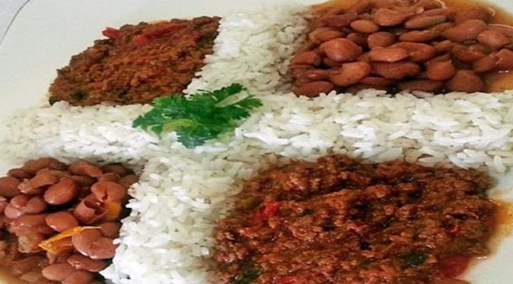

La Bandera Dominicana

"La Bandera" is one of the most recognized avocados in the Dominican Republic. It consists of white rice, red beans, fried ripe banana slices, accompanied by stewed chicken or "Ropa Vieja" and green salad.
General Info
Preparation Time (Estimated): 25 mins
Cooking Time: 45 mins
Total: 1hr 10 mins
Servings: 8
Yield: 8 servings
Ingredients
Arroz Blanco
- 5 tablespoons vegetable oil (soy, peanut, or corn)
- 1 ¼ teaspoon salt
- 6 cups of water
- 4 cups rice
Stewed beans
- 2 cups dried kidney beans, pinto or sunflower seeds
- 1 tablespoon of olive oil
- 1 pinch of oregano
- 1 cubanela pepper or bell pepper, chopped
- 1 small red onion, quartered
- 2 garlic cloves, mashed
- 1 cup of pumpkin cut into cubes
- ½ cup tomato sauce
- 4 sprigs thyme (optional)
- Leaves of a celery stalk, chopped (optional)
- ½ teaspoon minced fresh coriander
- 1 teaspoon of salt (or more, to taste)
Stewed chicken
- 2 pounds [0.9 kg] of the chicken
- lemons (limes outside the DR) cut in half
- 1 pinch of oregano
- 1 small red onion, sliced or eighths
- ½ cup chopped celery (optional)
- 1 teaspoon salt (you may need more)
- ½ teaspoon minced garlic
- 2 tablespoons oil (corn, peanut, or soy)
- 1 teaspoon regular white sugar
- 2 cups of water
- 4 tomatoes cut into 4 quarters
- 2 cubanela peppers or 1 bell pepper
- ¼ cup olives, halved (optional)
- 1 cup tomato sauce
- Some coriander leaves
- ¼ teaspoon pepper
Instructions
- Heating the water:
In a medium aluminum pot (minimum 2.5 liters [0.5 gal] capacity) heat 3 tablespoons of oil over medium heat, add the salt. When the oil is a little hot add 6 cups [1.4 liters] of water, taking care not to splash. If you use another type of pot, just combine oil, salt, and water and heat over medium heat.
- Adding the rice:
When the water reaches boiling point, add the rice and cook, stirring regularly to prevent it from sticking to the bottom.
- Covering the rice:
When the water has evaporated, cover with the lid and cook over very low heat (but enough to generate steam) for 15 minutes. Remove the lid, stir, add the remaining oil and cover again. This oil will help the rice to shine, and the concón will be crispier. In 5 more minutes taste the rice, it should be firm but soft inside. If necessary cover again and leave for another 5 minutes on low heat.
Want to go back to the main page and pick another recipe? Click here!